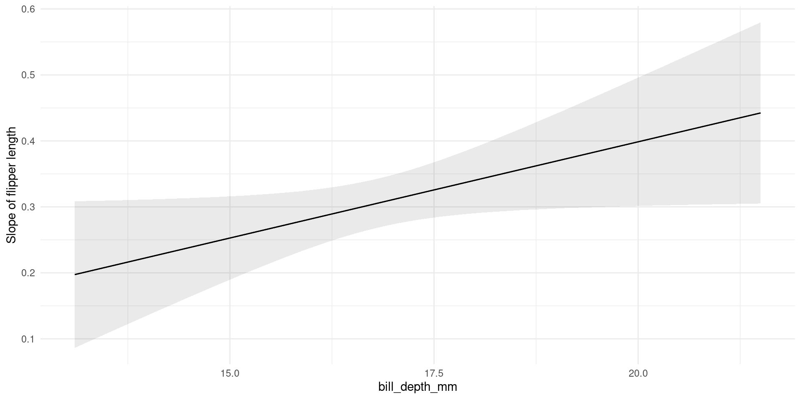

library(palmerpenguins) # penguins data
library(car) # Type 3 anova
library(marginaleffects) # Exploring interactions
library(ggplot2)Interpreting Interactions
stats
models
interactions
predictions
R
Creating models and checking their assumptions are the first steps to running an analysis, but once you have a beautiful, valid model, what next?
Interpreting models can be tricky as some results aren’t intuitive (i.e. often interactions, or non-Gaussian models), and to get the most out of your model, you’ll want to understand both what parameters are important (or significant), as well as how they are important (effects size and direction).
You may also want to run a post-hoc analysis to dive deeper into the effects of categorical predictors.
Here we’ll take a quick look at interactions.
Interpreting Interactions
Let’s see if there is an interaction between flipper length and bill depth on bill length. This may not be a terribly sensible example (and note that we’re skipping the all important step of checking our model!), but it should hopefully illustrate these tools.
First let’s create a linear model.
m <- lm(bill_length_mm ~ flipper_length_mm * bill_depth_mm, data = penguins)We can explore the results by looking at the summary() table
summary(m)
Call:
lm(formula = bill_length_mm ~ flipper_length_mm * bill_depth_mm,
data = penguins)
Residuals:
Min 1Q Median 3Q Max
-10.6952 -2.5439 -0.2036 2.4788 19.9132
Coefficients:
Estimate Std. Error t value Pr(>|t|)
(Intercept) 72.14404 49.77162 1.450 0.1481
flipper_length_mm -0.18476 0.24265 -0.761 0.4469
bill_depth_mm -5.31449 2.93076 -1.813 0.0707 .
flipper_length_mm:bill_depth_mm 0.02917 0.01439 2.027 0.0434 *
---
Signif. codes: 0 '***' 0.001 '**' 0.01 '*' 0.05 '.' 0.1 ' ' 1
Residual standard error: 3.991 on 338 degrees of freedom
(2 observations deleted due to missingness)
Multiple R-squared: 0.4703, Adjusted R-squared: 0.4656
F-statistic: 100 on 3 and 338 DF, p-value: < 2.2e-16Or with an Anova() table (here, from the car package, so we can get type III)
Anova(m, type = "III")Anova Table (Type III tests)
Response: bill_length_mm
Sum Sq Df F value Pr(>F)
(Intercept) 33.5 1 2.1011 0.14812
flipper_length_mm 9.2 1 0.5798 0.44694
bill_depth_mm 52.4 1 3.2882 0.07067 .
flipper_length_mm:bill_depth_mm 65.5 1 4.1103 0.04341 *
Residuals 5384.2 338
---
Signif. codes: 0 '***' 0.001 '**' 0.01 '*' 0.05 '.' 0.1 ' ' 1Okay, in our standard interpretation, we would say that yes, there is an interaction (p = 0.043).
With continuous variables, the summary table is often a bit more informative, as we can interpret the estimates. In this case, we can interpret the interaction as: for every 1 mm increase in flipper length, the effect of a 1 mm increase on bill depth increases by 0.029.
Hmm, not incredibly intuitive!
The marginalmeans package can be used to explore models with interactions via “conditional marginal effects” and predictions
Conditional marginal effects
These are really nice way of visualizing the verbal interpretation we made above.
We’ll use the plot_slopes() function to plot the effect of one variable on the slope of the other (i.e. an interaction!).
Here, we look at the effect of bill depth on the slope of flipper length (i.e. the effect of flipper length on our response, bill length).
The Y-axis represents the slope of the effect of flipper length on bill depth.
plot_slopes(m, variables = "flipper_length_mm", condition = "bill_depth_mm") +
theme_minimal() +
labs(y = "Slope of flipper length")
This figure is a visualization of our interaction parameter, but also puts things into the proper context and includes confidence intervals!
Here we see that a) the slope is always positive, b) becomes stronger for increasing bill depth.
Plotting predictions
We can plot the predictions to get a visual of this interaction.
plot_predictions(m, condition = list("flipper_length_mm", "bill_depth_mm"),
point = 0.5)
Here we can see the various lines (slopes) representing the effect of flipper length on bill length across different bill depths. We see that the effect (slope) increases as bill depth increases (compare the line with bill depth at 21.5 to the one with bill depth at 13.1). This is another visual representation of what we stated above, with additional context. In addition to seeing that all the slopes are positive, and the changes make them stronger, we see this in relation to the original data.
I find this kind of plot useful for sharing your results as it shows the raw data along with the model results and a clear explanation of what that interaction really means.
Conclusions
Interpreting interactions can be much simpler with visual aids, and it’s a good idea to use these figures not only for your benefit but for the benefit of anyone you’re sharing your work with.
You can make these figures by hand, but using marginalmeans will make it much easier (if slightly less customizable).
Further Reading
- https://vincentarelbundock.github.io/marginaleffects/
- https://www.andrewheiss.com/blog/2022/05/20/marginalia/#tldr-overall-summary-of-all-these-marginal-effects-approaches
Session Info
devtools::session_info()─ Session info ───────────────────────────────────────────────────────────────
setting value
version R version 4.3.3 (2024-02-29)
os Ubuntu 22.04.4 LTS
system x86_64, linux-gnu
ui X11
language en_CA:en
collate en_CA.UTF-8
ctype en_CA.UTF-8
tz America/Winnipeg
date 2024-03-15
pandoc 3.1.1 @ /usr/lib/rstudio/resources/app/bin/quarto/bin/tools/ (via rmarkdown)
─ Packages ───────────────────────────────────────────────────────────────────
package * version date (UTC) lib source
abind 1.4-5 2016-07-21 [1] CRAN (R 4.3.0)
backports 1.4.1 2021-12-13 [1] CRAN (R 4.3.0)
cachem 1.0.8 2023-05-01 [1] CRAN (R 4.3.0)
car * 3.1-2 2023-03-30 [1] CRAN (R 4.3.0)
carData * 3.0-5 2022-01-06 [1] CRAN (R 4.3.0)
checkmate 2.3.0 2023-10-25 [1] CRAN (R 4.3.1)
cli 3.6.2 2023-12-11 [1] CRAN (R 4.3.2)
colorspace 2.1-0 2023-01-23 [1] CRAN (R 4.3.0)
data.table 1.14.8 2023-02-17 [1] CRAN (R 4.3.0)
devtools 2.4.5 2022-10-11 [1] CRAN (R 4.3.0)
digest 0.6.34 2024-01-11 [1] CRAN (R 4.3.2)
dplyr 1.1.4 2023-11-17 [1] CRAN (R 4.3.2)
ellipsis 0.3.2 2021-04-29 [1] CRAN (R 4.3.0)
evaluate 0.23 2023-11-01 [1] CRAN (R 4.3.1)
fansi 1.0.6 2023-12-08 [1] CRAN (R 4.3.2)
farver 2.1.1 2022-07-06 [1] CRAN (R 4.3.0)
fastmap 1.1.1 2023-02-24 [1] CRAN (R 4.3.0)
fs 1.6.3 2023-07-20 [1] CRAN (R 4.3.1)
generics 0.1.3 2022-07-05 [1] CRAN (R 4.3.0)
ggplot2 * 3.5.0 2024-02-23 [1] CRAN (R 4.3.2)
glue 1.7.0 2024-01-09 [1] CRAN (R 4.3.2)
gtable 0.3.4 2023-08-21 [1] CRAN (R 4.3.1)
htmltools 0.5.7 2023-11-03 [1] CRAN (R 4.3.1)
htmlwidgets 1.6.4 2023-12-06 [1] CRAN (R 4.3.2)
httpuv 1.6.14 2024-01-26 [1] CRAN (R 4.3.2)
insight 0.19.6 2023-10-12 [1] CRAN (R 4.3.1)
jsonlite 1.8.8 2023-12-04 [1] CRAN (R 4.3.2)
knitr 1.45 2023-10-30 [1] CRAN (R 4.3.1)
labeling 0.4.3 2023-08-29 [1] CRAN (R 4.3.1)
later 1.3.2 2023-12-06 [1] CRAN (R 4.3.2)
lifecycle 1.0.4 2023-11-07 [1] CRAN (R 4.3.2)
magrittr 2.0.3 2022-03-30 [1] CRAN (R 4.3.0)
marginaleffects * 0.16.0 2023-10-19 [1] CRAN (R 4.3.1)
memoise 2.0.1 2021-11-26 [1] CRAN (R 4.3.0)
mime 0.12 2021-09-28 [1] CRAN (R 4.3.0)
miniUI 0.1.1.1 2018-05-18 [1] CRAN (R 4.3.0)
munsell 0.5.0 2018-06-12 [1] CRAN (R 4.3.0)
palmerpenguins * 0.1.1 2022-08-15 [1] CRAN (R 4.3.0)
pillar 1.9.0 2023-03-22 [1] CRAN (R 4.3.0)
pkgbuild 1.4.3 2023-12-10 [1] CRAN (R 4.3.2)
pkgconfig 2.0.3 2019-09-22 [1] CRAN (R 4.3.0)
pkgload 1.3.3 2023-09-22 [1] CRAN (R 4.3.1)
profvis 0.3.8 2023-05-02 [1] CRAN (R 4.3.1)
promises 1.2.1 2023-08-10 [1] CRAN (R 4.3.1)
purrr 1.0.2 2023-08-10 [1] CRAN (R 4.3.1)
R6 2.5.1 2021-08-19 [1] CRAN (R 4.3.0)
Rcpp 1.0.12 2024-01-09 [1] CRAN (R 4.3.2)
remotes 2.4.2.1 2023-07-18 [1] CRAN (R 4.3.2)
rlang 1.1.3 2024-01-10 [1] CRAN (R 4.3.2)
rmarkdown 2.25 2023-09-18 [1] CRAN (R 4.3.1)
rstudioapi 0.15.0 2023-07-07 [1] CRAN (R 4.3.1)
scales 1.3.0 2023-11-28 [1] CRAN (R 4.3.2)
sessioninfo 1.2.2 2021-12-06 [1] CRAN (R 4.3.0)
shiny 1.8.0 2023-11-17 [1] CRAN (R 4.3.2)
stringi 1.8.3 2023-12-11 [1] CRAN (R 4.3.2)
stringr 1.5.1 2023-11-14 [1] CRAN (R 4.3.2)
tibble 3.2.1 2023-03-20 [1] CRAN (R 4.3.0)
tidyselect 1.2.0 2022-10-10 [1] CRAN (R 4.3.0)
urlchecker 1.0.1 2021-11-30 [1] CRAN (R 4.3.0)
usethis 2.2.2 2023-07-06 [1] CRAN (R 4.3.1)
utf8 1.2.4 2023-10-22 [1] CRAN (R 4.3.1)
vctrs 0.6.5 2023-12-01 [1] CRAN (R 4.3.2)
withr 3.0.0 2024-01-16 [1] CRAN (R 4.3.2)
xfun 0.42 2024-02-08 [1] CRAN (R 4.3.2)
xtable 1.8-4 2019-04-21 [1] CRAN (R 4.3.0)
yaml 2.3.8 2023-12-11 [1] CRAN (R 4.3.2)
[1] /home/steffi/R/x86_64-pc-linux-gnu-library/4.3
[2] /usr/local/lib/R/site-library
[3] /usr/lib/R/site-library
[4] /usr/lib/R/library
──────────────────────────────────────────────────────────────────────────────